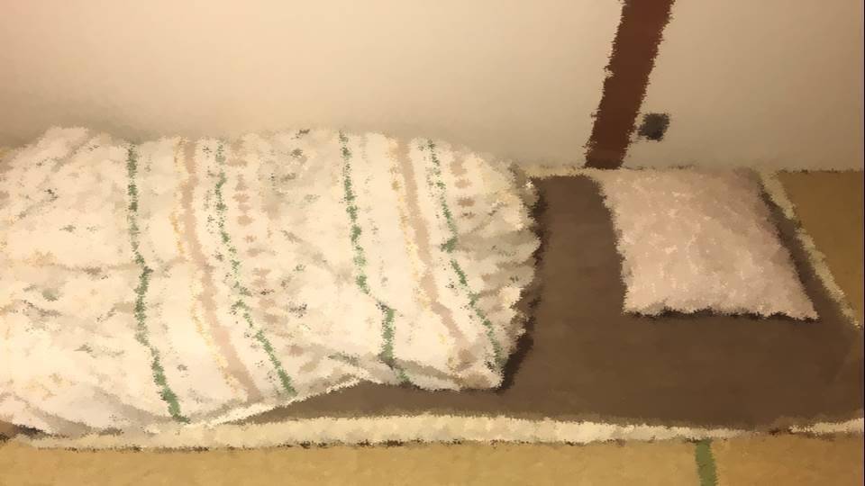

Script 00001C23


"I'm home, Eiichiro-san."
"Oh, welcome home, Mifuyu-san."
"Oh, welcome home, Mifuyu-san."

"Hehe, this feels a little embarrassing...
I just went and told Akane we're getting married."
"I see..."
"What's wrong?"
"Well, it's just... you marrying me means you'll be tied to my family back home, too..."
"I see..."
"What's wrong?"
"Well, it's just... you marrying me means you'll be tied to my family back home, too..."
"The Arata settlement, right? It's all right. I know I'll have to go through a hard trial for a year, too."
"I called Mom earlier. I told her I'd be bringing the person I want to marry. And then..."
"Did she... object?"
"No, she said she's really happy I found someone like that. It's just... this is something I only heard for the first time just now myself..."
"I called Mom earlier. I told her I'd be bringing the person I want to marry. And then..."
"Did she... object?"
"No, she said she's really happy I found someone like that. It's just... this is something I only heard for the first time just now myself..."
"Okay..."
"............"
"............"
"Mifuyu-san... maybe we shouldn't get married after all―"
"Eiichiro-san, first, please tell me what this is about. You can't carry it all by yourself."
"............"
"............"
"Mifuyu-san... maybe we shouldn't get married after all―"
"Eiichiro-san, first, please tell me what this is about. You can't carry it all by yourself."
"You're... right...
But... I think it's a really unpleasant story...
So, um... I'd like you to brace yourself before you hear it."
"All right."
"The old people, they commit suicide."
"Suicide?"
"All right."
"The old people, they commit suicide."
"Suicide?"
"When the residents of the Arata settlement turn 75, they all commit suicide in April."
"Um... why is that...?"
"Mom doesn't know why either... no, she said nobody knows why... I do remember old people dying suddenly once every few years, but I never dreamed it was suicide..."
"............"
"So... about the marriage, maybe after all―"
"Um... why is that...?"
"Mom doesn't know why either... no, she said nobody knows why... I do remember old people dying suddenly once every few years, but I never dreamed it was suicide..."
"............"
"So... about the marriage, maybe after all―"
"Eiichiro-san, people die sooner or later.
I used to be conservative and timid, and I've already put an end to that kind of life.
So I'm not afraid.
What scares me far more is growing old after losing you."
"Mifuyu-san..."
"Besides, if you know it's 75, then life's goal is easy to see. Isn't that a good thing? Rather than not knowing when you'll die, I think that way you can live life to the fullest."
"Mifuyu-san..."
"Besides, if you know it's 75, then life's goal is easy to see. Isn't that a good thing? Rather than not knowing when you'll die, I think that way you can live life to the fullest."
"............"
"And since you and I are the same age, I feel like getting to end our lives at the same time wouldn't be so bad... Is that a strange way to think...?"
"Uuu..."
"Eiichiro-san...?"
"And since you and I are the same age, I feel like getting to end our lives at the same time wouldn't be so bad... Is that a strange way to think...?"
"Uuu..."
"Eiichiro-san...?"
"Sniff... For you to say something like that to me...
Here I am, the only one who's scared. It's pathetic..."
"Heh heh heh, it's all right. With you, I'm not afraid of anything. So please stay with me for a little over 50 more years, okay?"
"Uuu... yes..."
"Heh heh heh, it's all right. With you, I'm not afraid of anything. So please stay with me for a little over 50 more years, okay?"
"Uuu... yes..."

"Oh, but there's just one thing I don't understand...
Are the people who commit suicide the ones from the Arata settlement, or the ones living in the Arata settlement? Which is it?"
"Um, which would it be... I don't know that much yet, so I'll ask Mom later."
"Um, which would it be... I don't know that much yet, so I'll ask Mom later."